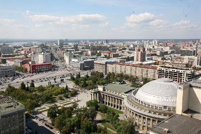

Новосибирск (до 1926 года — Ново-Николаевск) — третий по численности населения город России. Образует городской округ, являющийся самым населённым муниципальным образованием в стране.
Новосибирск основан в 1893 году, статус города получил в декабре 1903 году (по новому стилю — в январе 1904). Численность населения — 1 612 833 человек.
Комментарии
Город расположен на обоих берегах реки Обь рядом с Новосибирским водохранилищем, образованным плотиной Новосибирской ГЭС.
Территория города, в пределах его городской черты, составляет 505,62 кв.км.